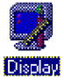
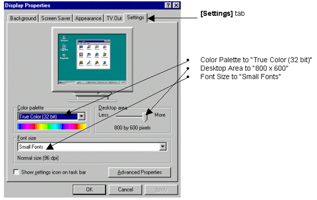
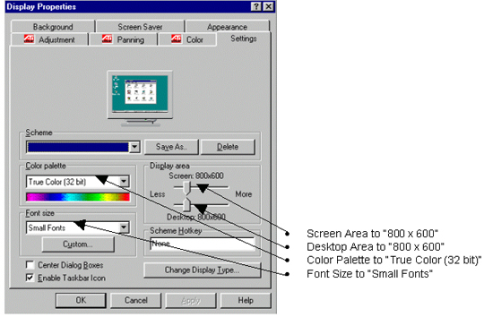

| NOTE: | Only do this procedure if the LCD PC display is a Panoview 600 model. |
Two types of LCD PC display devices are currently being used. The older model is Nview and the latest model is Panoview 600. For the Nview, the default resolution of 640 by 480 is the highest possible setting. So, no resolution adjustments are made to the Nview LCD. If the system being loaded contains a Panoview 600, do the following to adjust the screen resolution:
Open the system Control Panel by clicking on the [Start] button, then [Settings], then [Control Panel].
Find the [Display] Icon and double click
it. 
On the next screen, select the [Settings] tab. The screen will look like one of the following two screen shots. Set the following settings:
If your screen looks like the Illustration 9 do the following:
Select the [OK] button at the bottom of the screen. When asked to configure the monitor, select [YES]. Select [Standard Monitor Types] on the left side of the screen and [Super VGA 800 x 600] on the right side of the screen. Click on [OK] twice. The computer tests the configuration and asks “Would you like to Restart the computer with the new settings?” Click on [OK]; the computer will restart. When Windows 95 restarts, you can close the control panel by clicking on the [X] in the upper right corner of the window.
If your screen looks like the Illustration 10 do the following:
Click on the [Change Display Type] button. Click on the [Change] button by Monitor Type. Select [Standard Monitor Types] on the left side of the screen and [Super VGA 800 x 600] on the right side of the screen. Click on [OK]. Click on [Close] to the Change Display Type window. Now change the Display Area to 800 x 600. Click on [OK] to the Display Properties window. Click on [OK]. The computer will test the configuration and ask the user “Do you want to keep these settings?” Click on [YES] and close control panel by clicking on the [X] in the upper right corner of the window.
Illustration 9: STB Video driver (new Panoview 600 monitor)

Illustration 10: ATI Video driver (New Panoview 600 Monitor)
